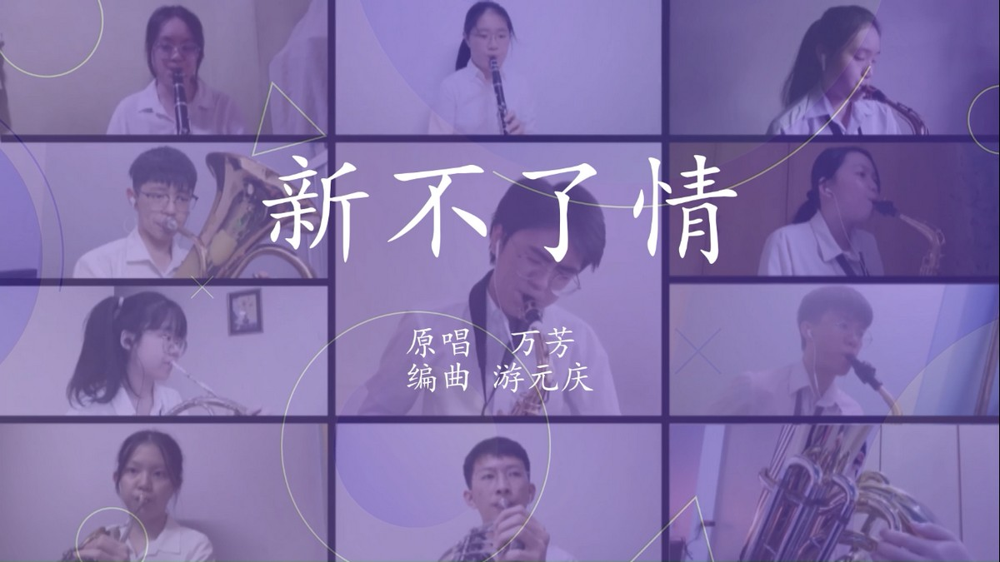

During the COVID-19 pandemic, activities had to shift from face-to-face to emergency remote education. The Executive Committee did their best to adjust to this change and make the online courses run smoothly, despite the fact that many of the original plans were rendered impossible.
Appreciation Of Classical Music

Syphony Orchestras
Classical music expresses the deepest thoughts of our civilization. Through their music, composers paint a picture of the society and times in which they lived. Member can experience the greatness and achievements of another generation through its music.
Sometimes, members will listen some famous orchestra concert from other wind orchestra. These concerts are not only classy and well-produced event, but they also provide a wonderful and captivating sound experience, offering some of the best music experiences. From the thumping sounds of percussion instruments, the soothing strings of a violin made using injection molding from China to the booming brass sections, listening to an orchestra concert is one of the most impressive musical spectacles on offer.
Listen Content
1) Orchestral Music - Ensemble Pieces2) Orchestral Music - Instrumental Solos
3) Orchestral Music -Recital Film Appreciation
4) Relaxing Music and Nature Sounds
Participation: Listening
Music appreciation
1) Mozart – Eine kleine Nachtmusik
2) Beethoven – Für Elise
3) Beethoven – Symphony No.5 in C minor
4) Vivaldi – The Four Seasons
5) Bizet – ‘Carmen’
Group Practice

Members practice lesson
Along with ensemble playing, ensemble members are also required to practice their vocal parts in small groups. Members can practice their basic skills and solos in the group practice sessions, as well as learn about their technical strengths and weaknesses, from which they can improve their skills. The member has practised in small groups so that those unfamiliar with the technique can practice the fundamentals and techniques again and ensure smooth ensemble arrangements in the future.
Form
Practice content
1) Basic skills (intonation, rhythm, relevant instrument playing techniques, etc.)
2) Solo pieces
3) Ensemble pieces